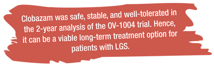

Clobazam: An effective long-term treatment option for lennox Gastaut syndrome
by medeka healthcare on october 01, 2013
The OV-1002 and OV-1012 studies demonstrated that
clobazam was well-tolerated and efficacious in the
treatment of drop seizures.4,5 Additionally, clobazam
significantly decreased average weekly rates of drop
seizures and total seizures when compared with
placebo.5
In the OV-1002 and OV-1012 studies, clobazam was shown to reduce average weekly drop attacks and total seizures.4,5 These effects were sustained and continued to improve in the OV-1004. Clobazam sustained the responder rates (percentage decreases in weekly rate of drop attacks and total seizures) throughout the first 2 years of OV-1004 (Table 1).1
Drugs with a wide spectrum of efficacy are needed to treat LGS.3 The goal of broad-spectrum antiepileptic drugs is to limit or delay the need for polytherapy. However, in most patients, more than one antiepileptic drug is needed because of the resistant nature and heterogeneity of LGS.1 In the OV-1004 trial, clobazam dosage stability was carefully monitored as patients with LGS usually need polytherapy. It was found that clobazam was generally stable and remained well less than 2 mg/kg for most patients at the interim cutoff.1
Patients receiving 1,4-benzodiazepines can often develop drug tolerance.6 Development of tolerance in the OV-1004 trial was not a significant factor for researchers because: no reduction in response rates was observed during the first 2 years of the study; mean modal clobazam dosages did not increase with time (Table 2); about 80% of patients remained in long-term treatment; and in some patients a trend toward a decrease in the number of concomitant epilepsy treatments was observed.1
In patients with LGS, complete remission is not considered a realistic treatment.7 Instead, patient’s quality of life is considered more important. According to global evaluations by physicians, caregivers and patients in the OV-1004 trial, treatment with clobazam improved the quality of life of most patients.1 Most of the patients were ‘very much improved’ or ‘much improved’ at all time points. Additionally, 80% retention rate in the first 2 years indicated overall treatment satisfaction and therapy compliance for most patients.1
LGS requires lifetime treatment, and most likely, polytherapy. Hence, it is important that drugs used for LGS have a favorable long-term safety profile. Some of the approved treatments such as felbamate (aplastic anemia) and lamotrigine (serious rash) can have serious adverse events.1 Clobazam seems to be well-tolerated in the 2-year analysis of the OV-1004 trial.1

Respiratory infections and falls are among the most common adverse events reported with clobazam use; however, adverse effects are expected in a long-term trial in patients with LGS. In pediatric patients, upper respiratory tract infection and pneumonia occurred predominately, which is quite common in trials involving pediatric patients with epilepsy. Additionally, no new safety concerns were reported in the open-label extension trial when compared with the results of short-term controlled trials.1


Contents
- Initial monotherapy with levetiracetam fails more frequently than monotherapy with valproate or oxcarbazepine:An enlightening evidence
- Sodium valproate:A gold standard for the treatment of childhood epilepsy
- Superior efficacy of sodium valproate IV reported in acute seizures and status epilepticus
- Clobazam: An effective long-term treatment option for Lennox-Gastaut syndrome
- Hospital coverage:Krishna Institute of Medical Sciences
- Oxcarbazepine:A valuable treatment option for partial-onset seizures in children
- Pregabalin and methylcobalamin combination for neuropathic pain:The Indian scenario
- Important aspects of epilepsy management:during pregnancy
- Neurology News
- Neurology Quiz
News Digest

ECG should be considered in patients with refractory epilepsy
Analysis of electrocardiogram (ECG) monitoring in patients with refractory epilepsy revealed significant differences in heart rate between ictal and pre-ictal states, between ictal and post-ictal states, and between pre- and post-ictal states. Hence, ECG might be helpful to detect serious cardiac abnormalities in patients with refractory epilepsy.
J Res Med Sci. 2013;18(Suppl 1):S32–4.

Use of gabapentin in pregnancy is not associated with increased risk of major malformations
A prospective study of pregnancy outcomes in 223 pregnant women who were exposed to gabapentin and 223 pregnant women who were unexposed to gabapentin reported that gabapentin use in pregnancy was not associated with increased risk for major malformations.
Epilepsy Behav. 2013;26(1):109–13.

A portable automatic device for the detection of generalized tonicclonic seizures
Increased S100B protein levels in cerebrospinal fluid may be associated with the neuronal damage following central nervous infections.
Epilepsia. 2013;54(4):e58–61.
Updates